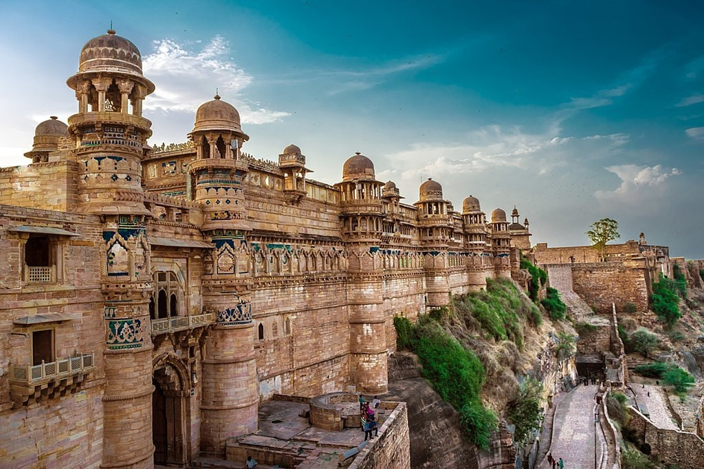
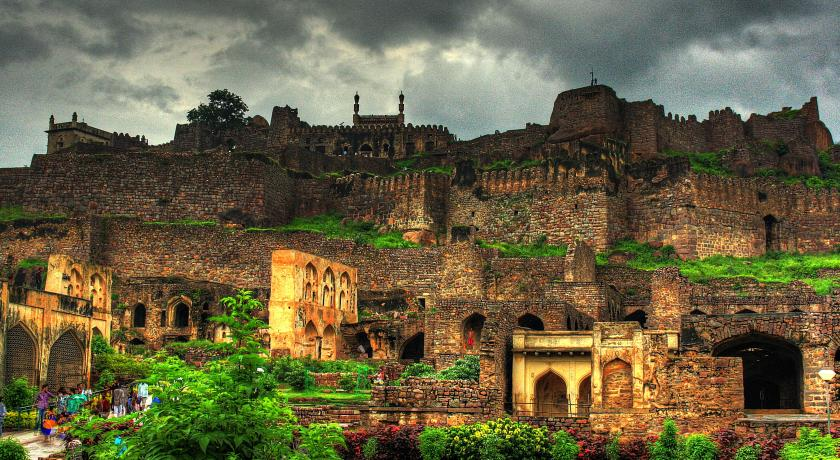
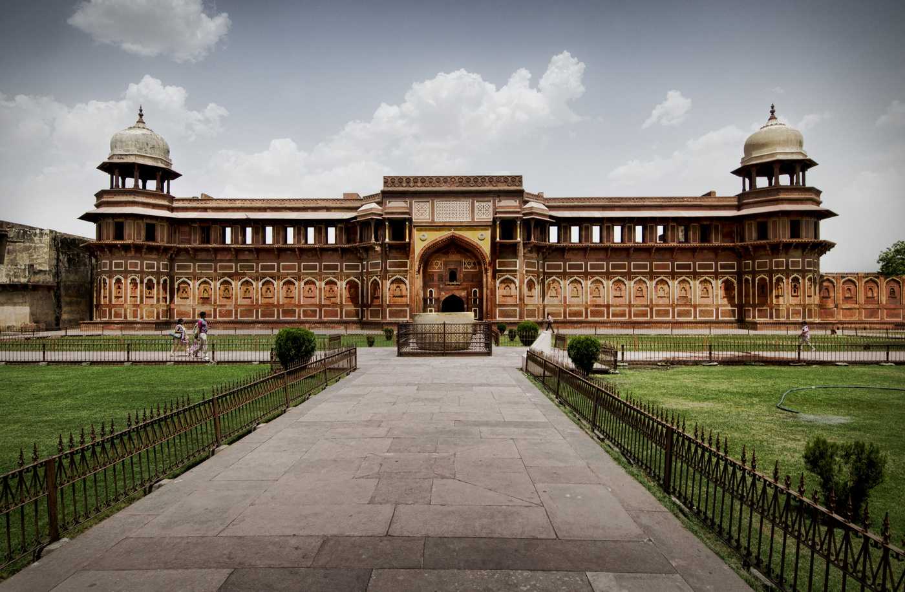

1. Mehrangarh Fort, Rajasthan
Standing at an altitude of 410 feet, Mehrangarh Fort is one of the biggest in our country. It was constructed around 1459 by Rao Jodha
and exudes an aristocratic opulence. It is a massive structure that covers an area over 1200 acres in Jodhpur. The fort is carefully
preserved and stands in its full glory. Some of the notable festivals taking place here include the World Sacred Spirit Festival and
Rajasthan International Folk Festival. Mehrangarh Fort is also characterized by its dazzling architecture and features intricate glasswork.
The period rooms that are open to the visitors include the Sheesh Mahal, Phool Mahal and Moti Mahal. The majestic sight of these rooms
will teleport you to the bygone era altogether. There is also a special evening show that allows visitors to immerse in the rich history
of the extravagant Mehrangarh Fort.

2. Gwalior Fort, Madhya Pradesh
Perched on a hilltop, Gwalior Fort is a magnificent monument that had its origin around the 10th century. However, there is no
concrete proof regarding its time of construction. It is believed that the fort was built by Suraj Sen and he named it after a saint
who cured his leprosy. In the later years, Gwalior Fort was captured by the Hunas, the Tomars, the Mughals and the Marathas.This
monument is a true embodiment of architectural wonder and reflects the skilled craftsmanship of those times. It is surrounded by
sandstone walls and packed with several water tanks. There are multiple temples and palaces that have a striking aura coupled with
the royalty of ancient India. The Man Mandir Palace is a jewel on the crown of Gwalior Fort. The Sas Bahu Temple and the Teli Ka
Mandir also showcases the timeless interiors of the glorious past.

3. Golconda Fort, Hyderabad
The 12th century Golconda Fort is one of the most popular attractions in Hyderabad. It stands at the outskirts of the city and
allure visitors with its grand architecture. The giant citadel had its origin in the 12th century under the patronage of the
Kakatiya Dynasty. It was rebuilt in the 16th century by various Qutub Shahi rulers.The mines around Golconda Fort were known for
the diamond trade and it has produced some of the most exquisite diamonds in the world. It is said that the fort had a huge vault
where Kohinoor and other diamonds were stored. This monument is the finest example of clever architecture. A mere clap at the entrance
would alert everyone about the danger that can occur. Tourists must witness the light and sound show that take place daily and sheds
light into the rich history of Golconda Fort.

4. Agra Fort, Uttar Pradesh
Built around 1573, the historical Agra Fort was the royal residence of the Mughal Kings till 1638. It is the only fort in the
country where all the Mughal Emperors have lived. Agra Fort covers an area of 94 acres and it is a UNESCO declared World
Heritage Site. This heritage structure originally belonged to Ibrahim Lodi, but Babur defeated him in the Battle of Panipat
and captured the fort.The exterior of the fort is made from red sandstone that was brought from Rajasthan. It is the finest
example of Indo-Saracenic architecture and reflects the skilled workmanship of the artists. This fort houses several
impressive sites such as the Diwani-i-Aam, Diwani-i-Khas, Moti Masjid and Machchhi Bhavan. The royal pavilion is the home to
the Nagina and the Mina Masjid. Other attractions include numerous courtrooms, Sheesh Mahal, a sprawling garden and the
Jasmine Tower.